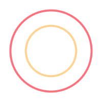

<mat-toolbar color="primary">
  

  <a *ngIf="isAtOverview" (click)="onLocationSelected()" mat-button routerLink="/{{tripId}}"><i class="material-icons backbtn">keyboard_arrow_left</i></a>

  <a *ngIf="!isAtOverview" mat-button routerLink="/home"><i class="material-icons backbtn">keyboard_arrow_left</i></a>

  <ng-container *ngFor="let location of locations">
    <a routerLinkActive="mat-accent" mat-button routerLink="{{location.id}}/overview" (click)="onLocationSelected()">
      <h2 class="mat-h2 mat-title">{{ location.title }}</h2>
      <small>{{ location.startDate | date:'dd/MM'}} -
        {{ location.endDate | date:'dd/MM' }}</small>
    </a>
  </ng-container>
  <span class="spacer"></span>

  <a *ngIf="!isLoading" mat-mini-fab routerLink="create" routerLinkActive="mat-accent">
    <i class="material-icons">
      add
    </i>
  </a>
</mat-toolbar>
